- About
- Diary
- People
- Events
- Reading
- Writing
- Meals
- Meetings
- Search

Jan. 1. Su.Deloraine, çala. Homer, v. 263: E Aram, p. 299. Call on Ollier: W calls: dine at mrs Wood’s, w. L Stanhopes, Holms, &c; adv. C Jones, Rosetti, Alkali45 / 47 ½
2. M.Homer, v. 368: E Aram, Vol. II, p. 224. Forster & Kenney call: dine at C Jones’s, w. Forrest, Booths, Bannister, Holm, & 2 Reeveses. 43 ½ / 45
3. Tu.E Aram, p. 308; Vol. III, p. 162. Call on Ollier: T T sups. 44 / 46
4. W.Homer, v. 423: E Aram, p. 306, fin. Forster calls: call on Ollier: meet Holm. 42 ½ / 46
5. Th.Deloraine, 5 lines. Homer, v. 461; , v. 50. Call on Orme & R T:W calls: teaKenney’s, w. 4 Mortons, Stevensons, Trueba, R R & T Ht. 42 ½ / 46
6. F.Deloraine, çala. Homer, v. 126: Raynal, çala.Meet Heath (greatest man in London): call on C Jones: M W S at tea: Lecture, Levisone: Cooke calls n. 44 / 47 ½
7. Sa.Deloraine, çala. Homer, v. 207: Raynal, çala. Bayley calls. 45 ½ / 50
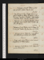Jan. 8. Su.Deloraine, invent. Homer, v. 256. Call on Booth: W dines. Burke, çala. 47 ½ / 52
9. M. Fog. Homer, v. 349: Bravo of Ve, p. 125. Sup at Martin’s, w. Ettrick Sd, Caunters, Cochrnes, Thomas, Macallum, Wheatsen, A Cunninghm, C Landseer, Picken & Brooke, Burns junr. 49 ½ / 54 ½
10. Tu.Deloraine, p. 103. Board of Education. Homer, v. 103 445. Call on Forrest n, Cooke & Crumpn: theatre, Old & Younge. 52 ½ / 57
11. W.Deloraine, p. 106. Homer, v. 544: Bravo of Ve, p. 247, fin. Theatre, My Own Lover; adv. Mortone. 54 ½ / 59
12. Th.Deloraine, p. 107. Homer, , v. 120. Call on F R n: M W S, Percy & W dine; adv. Chatfield.Deorsume. 54 / 57
13. F. Aram, çala, 1759.Homer, v. 216: Usurer’s Daughter, p. 115. Meet Judkin. 53 ½ / 54 ½
14. Sa. Deloraine, p. 109/3{.}Homer, v. 324: Usurer’s D, p. 262; Vol. II, p. 72. 50 / 52 ½
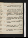Jan. 15. Su.Deloraine, p. 109. Homer, v. 420: Usurer’s D, p. 286; Vol. III, p. 66.W calls. 48 / 49
16. M.Deloraine, p. 110, & 1/2 p. Homer, v. 513: Usurer’s D, p. 275, fin: Sup at Picken’s, w. Ollier, Proctor, Dilke, Stebbing, Robert & Dr: invités, Hogg, Galt & A Cunningham. 45 ½ / 49
17. Tu.Deloraine, p. 112/2. Homer, 600. White at tea: call on Cooke & H Holm, w. M J, & on miss Northcote. 47 ½ / 52
18. W.Deloraine, p. 113. Homer, v. 720. Call on T Tn: meet Heath, iterum: theatre, Cathe of Cleves; adv. Mortone. 49 ½ / 52
19. Th. Candles. Homer, v. 815: Vidocq, p. 78.H Holm sups. 49 / 50 ½
20. F. Deloraine, çala. Homer, v. 909: Vidocq, p. 114: Trenck, çala. N G at tea. 47 / 50
21. Sa.Deloraine, p. 115/2. Homer, , v. 101: Trenck, çala. Call on M W S. 48 / 52 ½
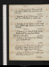Jan. 22. Su. Deloraine, p. 116. Homer, v. 211. S Br calls: W dines: M W S at tea: sup at Reynolds’s, w. Kenney. 50 ½ / 55
23. M. Deloraine, p. 118. Homer, v. 304: Trenck, çala. Dine at Woodifield’s, w. Castel & Cooke. 52 / 54
24. Tu. Deloraine, p. 119/2. Homer, v. 406: Trenck, çala.G White calls: Museum; Arame: M W S dines. Deorsum. 50 / 54 ½
25. W.Deloraine, p. 121. Harwood Ht calls: W at tea: theatre, Rent Day; adv. Gent & Mortone. Morton born 16 Jan. 1764 Reynolds 10 mos earliere52 ½ / 54 ½
26. Th.Deloraine, p. 124/2. Homer, v. 529. Museum; Arame. S Bannister sups. Russian Subsidy, 239 to 219e. 51 / 53 ½
27. F.Deloraine, p. 125/2. Homer, , v. 95. Call on Cook:University, w. Whites, Thomson, Bostock, Romilly, Tooke, Coates & Taylor. Panizzi. Snow.50 ½ / 51 ½
28. Sa. Deloraine, p. 126/2. Homer, v. 201. Call on Gent: M W S & Percy at tea; adv. T T. 47 ½ / 49 ½
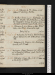Jan. 29. Su. Deloraine, p. 128/2. Homer, v. 305.Call on Mn & Kenney: W at tea. 48 ½ / 53 ½
30. M. Weather. Homer, v. 405: Shakespear, Sonnets, 45.M calls: sup at Martin’s, w. H Caunter, Macallum, Thomas, Wheatsen, Landseer; adv. Edwin Landseer. \ Foggo, Brooke. 51 / 53 ½
31. Tu.Deloraine, p. 130. Homer, v. 482. Meet Holm & mrs Wood: S Bannister sups. End of Vol. II. 51 / 53
Feb. 1. W.Deloraine, Vol. III, p. 2/2. Write to Brougham. Homer, , v. 101. M W S at tea: Cookes sup. 50 ½ / 52 ½
2. Th.Deloraine, p. 3/2. Homer, v. 200: Shakespear, Sonnets, 135. T T calls. 52 ½ / 55
3. F.Deloraine, 1 page. Homer, v. 315.Aldis calls: sup at Parris’s, w. Rothwel, Gents, Burlow Behnes, Scipio Clint51 / 54
4. Sa. Deloraine, 1/2 page. Spy, p. 82. T T dines: call, w. him & M J, on H Holm. 53 / 58
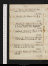Feb. 5. Su.Homer, v. 412: Spy, p. 98. Call on Booth; adv. Cowley Baxter: W dines. 56 ½ / 60 ½
6. M. Deloraine, çala. Homer, v. 531: Spy, p. 216. 57 / 61
7. Tu. Deloraine, p. 4. Homer, v. 561; , v. 80: Spy, p. 246. Call on Granvillen: dine at Aldis's, w. Berridge & C Jones; invité Skeffington55 / 60
8. W. Indisposed. Homer, v. 181: Spy, p. 350: Panorama of Madras, w. M Je. 51 / 56 ½
9. Th.Deloraine, p. 6/2. Homer, v. 306. Call on Gent(adv. Mat. Hill),T Tn, & miss Northcote, w. M J. 53 ½ / 55 ½
10. F.Deloraine, p. 7/2. Homer, v. 429: Voltaire, C Ed, 18 pp: Spy, p. 410, fin. M at tea. 51 ½ / 56
11. Sa.Indigestion. Deloraine, p. 7. Homer, v. 542. M W S calls. 50 ½ / 52
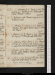Feb. 12. Su.Deloraine, p. 9/2. Homer, v. 651: Nugent, p. 46: R Esher, p. 135. Forster calls na: call on H Payne n: W dines. 49 ½ / 51 ½
13. M.Deloraine, çala. Homer, v. 709; , v. 50: R Esher, p. 299. 49 / 51
14. Tu.Deloraine, p. 11. Homer, v. 167: Legend of Montrose, Vol. I. Call on Hudson:Harwood Ht calls; adv. H Paynen. 49 / 50
15. W.Deloraine, p. 14/2. Homer, v. 294: Montrse, Vol. II, p. 96.T T & Forster call: M W S dines. 46 ½ / 50
16. Th. Deloraine, 8 lines. Homer, v. 422. H Payne & W n call: dine at Gent’s: City Conversazione, w. Gent, B Burlowe, Rothwel, Martin, Hart Davis. Fog.44 ½ / 46 ½
17. F. Deloraine, revise. Homer, v. 525: Red Gauntlet, çala. Call on Mathews: theatre, Self Tormentor; adv. Stanhopee. 45 / 50 ½
18. Sa.Homer, v. 579: Red Gauntlet, çala. Call on Mat. Hill: meet L Hunt: M at tea. E Grey, Dinner w L Mayore.48 ½ / 53
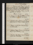Feb. 19. Su.Deloraine, çala. Homer, , v. 109: Red Gauntlet, Vol. II, p. 70. Call on Olliern: Kenney csn: W dines: Pickergils, w. S Carolinian, St Simonian, Duverner{,} Galt, Sigmond, Granville, Owen, Martin, Ayrton, Knowles, Brockedon, Renton, MurrayCobweb, in right eye. See Jan. 31, 1830. 49 ½ / 52 ½
20. M.Deloraine, Geography. Homer, v. 209: Red Gauntlet, p. 212. N G calls. Rhume, 10 dayse.48 / 53
21. Tu. Homer, v. 319. Red Gauntlet, p. 328. Dine at Mathews’s, w. C M, junr; adv. Mason. 49 / 53 ½
22. W.Deloraine, revise. Homer, v. 403: Red Gauntlet, Vol. III, p. 46. H Payne & W dine; adv. M. 47 ½ / 51
23. Th.Homer, v. 520: Sir J Carr: Red Gauntlet, p. 172. M W S at tea. 47 ½ / 50
24. T.Deloraine, Bruges. Homer, v. 605: Red Gauntlet, p. 331, fin: Montrose, p. 164. 46 ½ / 50
25. Sa.Deloraine, çala. Homer, v. 709: C W, Edw. Fitzgerald, çala. M W S at tea. 45 ½ / 49
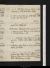Feb. 26. Su. Deloraine, Bruges. Homer, v. 784: Montrose, p. 330, fin. Call on Ollier: W dines. 45 ½ /51 ½
27. M. Homer, v. 847; , v. 60. Seek Dulau: M W S at tea; adv. Harwood Ht. 48 / 51 ½
28. Tu.Deloraine, çala. Homer, v. 153: Rochejaquelin & Van Halen, çala. Metropolitan Boroughs, 316 to 236 /e48 ½ / 50 ½
29. W.Deloraine, çala. Homer, v. 250: Louvet, çala. Sup at Reynolds’s, w. F R. 47 ½ / 50
Mar. 1. Th. Deloraine, çala. Homer, v. 372: Louvet, çala. Theatre, Fiend Father, C G; adv. Mortonse. 48 / 52 ½
2. F. Deloraine, çala. Homer, v. 471: Louvet, çala. W dines; adv. M W S. 50 / 53 ½
3. Sa. Deloraine, revise. Homer, , v. 110: Prisonniers de Caucase. Call on Hudson:T N Bailey’s, w. Murray, Jerdan, Penson, Ollier, Blanchard, Dr Wood, Rt Montgomery, Kennedy50 ½ / 52 ½
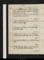Mar. 4. Su.Homer, v. 205: Siberienne, p. 96. Call on Boothapoplexye: Pickergil’s, w. Poole, Owens, Beloe, Prior, Sigmond, Knowles, Wilshen, Emersons, Britton, Roscoe, Brooke. 51 / 57
5. M. Deloraine, p. 14. Homer, v. 306. T T calls, ppc: theatre, Dæmon, D L, w. F Re. 53 / 58
6. Tu. Rain. Write to P H G. Homer, v. 412. Dine at Ollier’s, w. Scargil: W calls. 51 ½ / 54
7. W. Deloraine, p. 15/2. Homer, v. 505. M W S at tea: S Bannister calls. 51 ½ / 53 ½
8. Th.Deloraine, p. 16. Homer, v. 600: Siberienne, p. 305, fin. E Poole calls: call on F Rn: seek H Payne. 50 / 52
9. F. Necromancers. Homer, v. 700. Call on Murray &Aldis. 48 / 55
10. Sa.Write to Murray. Homer, v. 801: Nugent, p. 191. Forster calls:M W S & W at tea. 48 ½ / 55
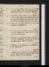Mar. 11. Su.Fog. Homer, v. 837, , v. 63: Buncle, çala: Nugent, p. 276. S Bannister calls: call onBooth; adv. Tho. Baxter: W at tea.48 / 52 ½
12. M. Deloraine, 7 lines. Homer, v. 132: Nugent, p. 384. Call on S Gent: sup at Martin’s, w. Rothwel, Caunter m, Macallum, Thomas, 3 Landseers, Brooke (Martin absent), Burlowe. 49 / 52 ½
13. Tu. Homer, v. 232: Nugent, Vol. II, p. 246. Call on Ollier & miss Northcote. 49 / 52
14. W.Deloraine, p. 17. Homer, v. 332: Nugent, p. 342. Call on Mn: sup at Jacob’s, w. miss Jones: meet S Bannister. 51 / 54
15. Th. Deloraine, p. 19. Homer, v. 432: Nugent, p. 444, fin. Print Room, Museum, w. W; adv. Chatfield: M at tea. & Lathame: M at tea. 51 / 53 ½
16. F.Deloraine, p. 20. Homer, v. 522: P Warbeck, p. 200. Call on F Rn. 49 ½ / 54 ½
17. Sa.Deloraine, p. 21. Homer, , v. 103: Warbeck, p. 288. Call on H Paynen: M calls: M W S at tea: theatre, Francis I; adv. Stanhopee. 53 ½ / 58
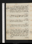Mar. 18. Su.Deloraine, p. 22. Homer, v. 225: Warbeck, p. 340. White&W call: call on Booth: Pickersgil’s, w. Poole, Kenney, Murray, Ayrton, Sigmond, Britton, qu S Carol n, Witshen. Col. Thornton; Brockedon.51 ½ / 57 ½
19. M.Deloraine, 11 lines. Homer, v. 331: Warbeck, Vol. II, p. 62: Trelawney, p. 205. M W S at tea. 53 / 56 ½
20. Tu.Deloraine, p. 24. Homer, v. 435: Trelawney, p. 333. Write to Ollier; call na:N G at tea. 55 / 60 ½
21. W.Deloraine, 12 lines. Homer, v. 543: D’Abrantes, çala. W calls: tea Crumpe’s. 55 / 61
22. Th.Deloraine, p. 25. Homer, v. 652: Trelawney, Vol. II, p. 94. M W S at tea: sup at Reynolds’s. Third Reading 355 to 239e. 57 / 62
23. F. Deloraine, 5 lines. Homer, v. 746: Trelawney, p. 341. Call on W, at Rodd’s, Hone: Suffolk Street, w. W; adv. Rogers, mrs C Kemble (C K & F) Mortons’, E Prentis, T Hill, M Westmacot, C Heath, Bernal, Hofland. Blast. 58 / 61
24. Sa.Deloraine, çala. Homer, , v. 100: C Harold, çala: Mohicans, p. 88. Call on J Taylor; adv. Angelo. 54 ½ / 59
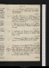Mar. 25. Su. Deloraine, p. 28/2. Homer, v. 200: Mohicans, p. 225. Call on Ollier, & mrs Wood; adv. Birkbecks. 53 / 57
26. M.Weather. Homer, v. 329: Mohicans, p. 287. M W S at tea: Martin’s, w. Alcock, Dr Ritchie, Caunter m, Witshen, Foggo, 2 Landseers, Thomas, Macroon, Wilmot. 52 ½ / 55
27. Tu. Deloraine, p. 29/2. Homer, v. 418: Gilblas, p. 56. Call on Pickenn: theatre, Der Alchymiste. M calls. 53 ½ / 58
28. W.Deloraine, 29. Homer, v. 537: Gilblas, p. p. 150: Trelawney, Vol. III, p. 56. W & Leic. Stanhopesne call. 52 ½ / 60
29. Th. Deloraine, p. 32/2. Homer, v. 665: Trelawney, p. 123.M W S at tea; adv. W . (Read) . 52 ½ / 60 ½
30. F.Deloraine, p. 33. Write to Murray& Bulwer. Homer, v. 776: Trelawney, p. 204. S Knowles calls: L Stanhope’s, w. Ds Leinster, miss Porters, Birkbecks, Holmeses, Rosetti, Alkali & M W S. C Beauclerk. Call on Ollier. 53 ½ / 62
31. Sa.Deloraine, p. 34. Homer, v. 867: Trelawney, p. 338, fin. Call on Bentley. 55 / 58 ½
Apr. 1. Su.Deloraine, p. 36/2. Homer, , v. 109: Mohicans, Vol. II, p. 57. Call on Booth: W dines: Pickersgil’s, w. Kenney, Morton, Knowles: Bulwer’s, w. Ramoon Roy, Jerdan, Boddington, T Moore. Bell55 / 58
2. M.Deloraine, p. 36. Homer, v. 208: Gilblas, p. 224. De la Fons', w. Aldises, 2 Clints, Landseer & Thomas55 ½ / 61 ½
3. Tu.Homer, v. 303: Werter, Vol. I: Gilblas, p. 256. Birkbeck calls. 56 ½ / 64
4. W.Homer, v. 365: Werter, Vol. II, p. 98: Mohicans, p. 170.M W S at tea: W sups. Write to Bentley. 60 / 67 ½
5. Th.Deloraine, p. 37. Homer, v. 468: Werter, fin: Mohicans, p. 224. Theatre, Hunchback; adv. Poole, L K, mrs Morton, Stanhope, Barham & R Re. 62 / 67 ½
6. F.Homer, v. 573: Gilblas, p. 315; Tom. II, p. 35. Call on Ollier: M W S at tea. 61 ½ / 65
7. Sa. Remittance. Homer, v. 684: Mohicans, p. 276; Vol. III, p. 63. Call on Hudson: theatre, Compact; adv. Gents & Danielse. 57 / 61 ½
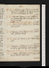Apr. 8. Su.Deloraine, çala. Homer, v. 761: Warbeck, p. 172: Gilblas, p. 63. Call on S Knowlesn (adv. père & 2) &Daniel; adv. Soane. 56 / 63
9. M.Head-achee. Homer, , v. 126: Gilblas, p. 132. Kenney calls: call on Rees; adv.Orme. Invent paragraph. Seco{nd} Reading, Lords, Debate beginse.56 / 62 ½
10. Tu.Homer, v. 238: Gilblas, p. 195. Meet Whites: call on Jacob na. 55 / 62 ½
11. W.Deloraine, 6 lines. Homer, v. 342: Louvet, çala. Gisbornes& W call. 56 / 63
12. Th.Head-achee. Homer, v. 445: Rogers, Italy, çala. 55 ½ / 59
13. F.Deloraine, 5 A M. Homer, v. 540: Vidocq, p. 50. Call on miss Northcote. Write to M W S. Reform Bill, Secd Reading, Lds 184 to 175 e56 / 62 ½
14. Sa.W calls, 7 1/2 A M. Homer, v. 616: Voyage autr de ma Chambre. M W S at tea. 56 ½ / 63 ½
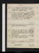Apr. 15. Su.Deloraine, invent. Homer, , v. 105: Voyage autour, &c. Call on Boothn: Latham, Blanchard, Chatfield & W sup. 59 / 64 ½
16. M. Homer, v. 208: Wanderer: Lepreux: Mohicans, p. 156. Martin’s, w. LawrenceRoscoe, miss Crump, prof. Miller, Caunters, Stebbing, Landseer, Thomas, Brooke, Wilkins lithogr, York. 61 / 65 ½
17. Tu.Fog. Homer, v. 304: 1/2 Cid.W calls. 57 ½ / 63
18. W.Deloraine, 4 1/2 A M. Homer, v. 424. Hampstead, w. M J; dine at Spaniard. 57 / 63 ½
19. Th.Homer, , v. 102: Warbeck, p. 253: Gilblas, p. 247. Dine at Geo. White’s, w. Quain, Disney, Norris, Morrison, Clayton, White Pt Stot, White Esleworth, Helder, Tulke, Whiting. 59 / 62
20. F.Rain. Homer, v. 202: Warbeck, p. 335: Gilblas, p. 275. W dines: M W S & N G at tea. 58 / 62
21. Sa.Homer, v. 308: Gilblas, Tom. III, p. 48.W at tea. Joseph Jacob dies.57 ½ / 63 ½
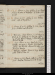Apr. 22. Su. Homer, v. 412: Gilblas, p. 111. Hampstead, w. W; dine at Hollybush: W, M W S & Percy sup. 58 / 64
23. M.Homer, v. 503: Gilblas, p. 250. H Holm calls n: sup at Reynolds’s. 59 ½ / 65 ½
24. Tu.Homer, , v. 113: Gilblas, p. 304; Tom. IV, p. 87.W& White call: M at tea. 61 / 63 ½
25. W. Deloraine, 2 lines. Homer, v. 208: Warbeck, Vol. III, p. 61: Gilblas, p. 135. M calls: call onJ Taylor (adv. miss T & Morley): M W S at tea; adv. Harwood Ht, ppc. 59 / 62
26. Th. Rain. Homer, v. 307: Warbeck, p. 149: Wooston, Discourse I. Theatre, Merchant of London; adv. W & Hill:eS Bannister sups. meet Sheridan Knowles. 57 / 59 ½
27. F. Deloraine, 1 1/2 pages. Homer, v. 409: Woolston, çala. M W S & W au soir. 56 / 61 ½
28. Sa.Homer, v. 521: Burke, Letter to a Noble Lord, p. 24: Woolston, Discourses III, IV, V. M calls. 56 / 59 ½
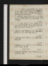Apr. 29. Su.Homer, v. 611: Woolston, fin: Gilblas, p. 184. Call on Booth: Pickersgil’s, w. Lawrence,Roscoe, Chorley, Fraser, Kenney, Knowles, Poole, Sigmond, A Cunningham, Beloe, Morris56 ½ / 61
30. M. Deloraine, 7 lines. Homer, , v. 110: Gilblas, p. 223. W calls, & Johnson of Manchester: M W S & W sup . 57 ½ / 62
May 1. Tu. Rain. Homer, v. 237: Gilblas, p. 270. Call on Hudson: theatre, Hunchback; adv. Gents, Soane & mrs White; Knowles senre. 57 ½ / 60 ½
2. W. Deloraine, çala. Homer, v. 330: Hunchback: Gilblas, p. 292. Lubé calls: W au soir. 59 / 63 ½
3. Th.Deloraine, revise. Homer, v. 430. M W S at tea; W expected. 61 / 63 ½
4. F.Deloraine, revise. Homer, v. 515: Northcote, çala. M calls. Youth. J Taylor dies . 60 / 62
5. Sa. Indisposede. Deloraine, revise. Homer, , v. 107: Alhambra, Vol. I. 58 ½ / 64
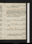May 6. Su. Deloraine, p. 38. Homer, v. 211: Gilblas, p. 351, fin. M W S at tea. Schedules, A B, postponed, 151 to 116 e61 ½ / 66
7. M. Deloraine (1/2 page), p. 40. Homer, v. 305. W calls: Exhibition; Rothwel, Uwins, Gents, Joseph, Uwins,Parris, Judkine: Martin’s, Meyerbeer, Crumps, H Caunter, Roscoe, Chorley, Ritchie, Dilke. 63 ½ / 70
8. Tu.Homer, v. 350: Alhambra, Vol. II, p. 40. W dines ms: theatre, Tyrolese Peasante. 65 ½ / 67
9. W. Homer, v. 456: Alhambra, p. 299, fin. M calls:W at tea. Ministers resigne.61 / 62 ½
10. Th. Homer, v. 554: Indicator, çala. Cooke calls, & M W S. Ibington, 288 to 208e.57 / 60 ½
11. F.Deloraine, 1 page. Homer, v. 680: Indicator, çala. 56 ½ / 61 ½
12. Sa.Deloraine, 1 page. Homer, v. 796: Indicator, çala. M W S at tea; adv. W.Call on H Holmn. 57 / 61 ½
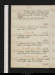May 13. Su.Deloraine, 1 page. Homer, v. 897. T N Bailey calls:Pickersgil’s, w. Basil Hall, Ayrton, Morton, Kenney, Poole, Brockedon, Prior & W. Whittaker. 57 / 61 ½
14. M. I U. Homer, , v. 103: The Member. 56 ½ / 61
15. Tu.Newspaper. Homer, v. 264: Indicator, çala. Call on Gent: W at tea. Grey sent fore. 57 / 61
16. W.Deloraine, 2 pages. Homer, v. 404. Cooke calls: M W S at tea. 56 / 62 ½
17. Th. Deloraine, p. 41, & 1/2 page. Homer, v. 516. Tea M W S’s, w. mrs Hogg; invité Trelawney. Sir Herbert Taylor’s Lettere.57 ½ / 62
18. F.Deloraine, 10 lines. Homer, v. 642: Contrast, Vol. I. Sup at Reynolds’s, w. mrs Mortimer, F & R. Ministers reinstated.e58 / 63
19. Sa.Deloraine, p. 42. Homer, v. 804, fin: Contrast, Vol. II. W calls n: call on miss Northcote. 60 / 65
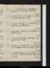May 20. Su. Deloraine, p. 43. Herodotus, c. 5: Contrast, Vol. III. Call on Sass: M W S at tea. 61 ½ / 66
21. M.Deloraine, p. 44. Herodotus, c. 10: Gibbon, p. 42. N G at tea: Hudson sups. 61 ½ / 66 ½
22. Tu.Fievrée. Herodotus, c. 16: Ld Herbert, çala. M W S at tea: Geo. White sups. 64 / 67 ½
23. W.Indigestione. Deloraine, p. 45. Herodotus, c. 23: W Thomas, çala. 65 / 69
24. Th.Fievrée. Deloraine, p. 46. Herodotus, c. 29: Life of Pole, p. 90. W calls. 65 ½ / 68 ½
25. F.Deloraine, p. 48. Herodotus, c. 32: Pole, p. 161. Call on Brockedon: theatre, Venice Preservd; adv. R Re. 65 ½ / 69
26. Sa.Invent. Deloraine, p. 49. Herodotus, c. 36: Pole, p. 184. W dines: M W S at tea: H Holm & Kenney sup. 67 / 69
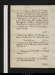May 27. Su. Indisposede. Deloraine, p. 50/2. Herodotus, c. 44: Melmoth, p. 298. Call on Booth: Pickersgil’s, w. mrs Trollope, Owen, Poole,Ayrton, Knowles, Sigmond, Beloe, Brockedon, Morris, Sass. 65 / 67 ½
28. M.Deloraine, p. 51. Herodotus, c. 50: Melmoth, p. 340; Vol. II.Picken calls: Martin’s, w. Crumpes, Holm, Caunter m, Stebbing, A Cunningham, Thomas, Wheatsen, C Landseer, Gardner. 64 / 68
29. Tu.Deloraine, p. 53. Pole, p. 208: Melmoth, Vol. III, p. 161. W calls. 65 / 68
30. W.Write to E Grey. Deloraine, p. 55/2. Herodotus, c. 57: Pole, p. 228: Melmoth, p. 287. Call at Mackintosh. Mackintosh dies . 64 / 67 ½
31. Th.Deloraine, p. 56/2. Write to B Allen. Herodotus, c. 59: Melmoth, p. 368. M calls: King’s College, w. H Holm: M W S au soir. 64 / 65
June 1. F. Deloraine, p. 58/2. Herodotus, c. 62: Melmoth, Vol. IV; p. 274. 63 / 65 ½
2. Sa.Deloraine, p. 60/2. Herodotus, c. 65: Melmoth, p. 401. Call on Brockedon, sit. 62 ½ / 66 ½
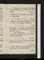June 3. Su.Deloraine, p. 60, & 1/2 page. Herodotus, c. 68: Melmoth, p. 453, fin. M W S at tea; adv. T N Bailey. 64 / 68 ½
4. M. Deloraine, p. 61. Herodotus, c. 72: Pole, p. 321: Warbeck, fin. Third Reading, 106 to 22e.65 ½ / 68
5. Tu.Deloraine, 7 lines. Write to Bulwer. Herodotus, c. 76: Pole, p. 408. W dines. Indigestione. Tumults at Parise.65 / 67 ½
6. W.Herodotus, c. 79: Pole, p. 495. Exeter Hall: dine at Gent’s, w. Daniels, Westall, Paris, Heseltine, Clements & Coke. Jeremy Bentham dies.64 ½ / 66 ½
7. Th.Herodotus, c. 82: Pole, Vol. II, p. 132. Call on Brayley: M W S at tea. Reform Act passede.64 / 67 ½
8. F. Herodotus, c. 85: Rey, Ric. III, p. 129. M calls: theatre, Othello, act 2/2, 3, 4/2e. 64 / 67 ½
9. Sa. Constipe. Deloraine, çala. Herodotus, c. 88: Rey, Ric. III, p. 312. Call on Westalln. 65 / 68
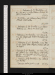June 10. Su.Deloraine, p. 62/2. Herodotus, c. 91: Rey, Ric. III, p. 371, fin. W dines: Kenney, Virginie & Terese at tea. 64 / 67 ½
11. M.Herodotus, c. 94: Johnson, Lives of Browne & Drake. M W S at tea. 65 ½ / 68 ½
12. Tu. Deloraine, p. 62. Herodotus, c. 99: Religio Medici, p. 94: Pole, p. 186. Uwins sups. 67 / 70 ½
13. W. Deloraine, p. 63/2. Herodotus, c. 105: Religio, p. 174, fin. Joseph calls: M W S & Trelawney sup; adv. W. 68 / 71 ½
14. Th. Deloraine, p. 64. Herodotus, c. 109: Pole, p. 281. Call on Holm: H Payne& Holm call: call on M W Sn. 67 / 70
15. F.Deloraine, p. 66/2. Herodotus, c. 115: Pole, p. 340, fin: Cellini, p. 107. Call on H Payne: M W S & Percy call, ppc: mrs Hogg calls: sup at Reynolds’s, w. Mortimer, F & R. X66 ½ / 67 ½
16. Sa.Deloraine, p. 68/2. Herodotus, c. 119: Cellini, p. 250. W at tea. X School for Scandal, first in 2 acts. 65 / 67 ½
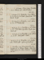June 17. Su.Deloraine, 5 lines; revise. Herodotus, c. 124: Cellini, p. 415. Call at Picken’s. 66 ½ / 69
18. M.Deloraine, p. 70/2. Herodotus, c. 130: Cellini, p. 512; Vol. II, p. 58. Theatre, Hamlet; adv. E & M Mortone: W calls n. 68 / 72
19. Tu. Deloraine, p. 71. Herodotus, c. 136: Cellini, p. 307. MrsBayley sups. 69 / 71 ½
20. W.Deloraine, p. 72. Herodotus, c. 141: Cellini, p. 360. Seek H Holm: N G at tea: theatre, Leare. White calls. 70 / 72
21. Th.Deloraine, p. 73. Herodotus, c. 144: Cellini, p. 403, fin. Call on Joseph n: W calls n. 67 ½ / 70 ½
22. F.Deloraine, p. 74. Herodotus, c. 150: Troilus, çala. H Holm calls n: call on miss Northcote. 67 / 68
23. Sa.Herodotus, c. 156: Richardson, W, çala: Hodgkins, p. 60. W dines: theatre, 1/2 Much Ado, & Wolf & Lamb; adv. Listons & Panizzie: Trelawney au soir n. 65 ½ / 69
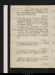June 24. Su.Constip. Subtle, but passivee. Herodotus, c. 163: Hodgkins, p. 129: Richardson, çala. Call on Booth, Charlotte Street. 65 / 67 ½
25. M.Herodotus, c. 165: Richardson: Whateley. Forster calls{,} Wallacena: Martin’s, w. Dilkes, Uwinses, Iris n (Sterne & Voltaire) Macroon, Thomas, Brookes, Caunter,Stebbing. 65 / 68 ½
26. Tu.Deloraine, p. 76. Herodotus, c. 170: Cymbeline, acts 1, 2. Mrs Wood’s, w. Stanhopes, Bowring, Birkbeck, Holms, Visconti, Owens, Hutchinson, Yg American, C Jones, mrs Booth, Sass.Granville. 64 ½ / 66 ½
27. W.Deloraine, p. 78. Herodotus, c. 173. Gaskells call. 64 / 69
28. Th. Deloraine, p. 80/2. Herodotus, c. 177: Schlegel, çala. H Holm&Woodward call. 67 ½ / 71 ½
29. F. Deloraine, p. 81. Herodotus, c. 181: Schlegel, çala: Cymbeline, act 3. Trelawney &W sup. 69 ½ / 74
30. Sa.Deloraine, p. 83. Herodotus, c. 185: Cymbeline, act 4. Call on Brayley. 68 ½ / 72
July 1. Su.Deloraine, p. 86/2. Herodotus, c. 187: Schlegel, çala. Meet Faithful: L K & Betsy sup; adv. W. 68 ½ / 73 ½
2. M. Deloraine, p. 88/2. Herodotus, c. 191. Museum; J Bayleye: theatre, Richard III (Kean)e. 68 ½ / 72
3. Tu.Deloraine, p. 88, & 1/2 page. Herodotus, c. 193: Schlegel, çala. 67 / 70
4. W. Deloraine, p. 90/3. Herodotus, c. 195: Schlegel, Vol. I, p. 51. Call on Joseph. 67 ½ / 72
5. Th.Deloraine, p. 92/2. Herodotus, c. 198: Schlegel, p. 118. 68 ½ / 73 ½
6. F.Deloraine, p. 93. Herodotus, c. 202: Schlegel, p. 178. 69 ½ / 71 ½
7. Sa.Deloraine, p. 94/2, & 1/2 page. Herodotus, c. 206: Schlegel, p. 231. White calls n: sit to Joseph. 66 ½ / 70 ½
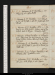July 8. Su.Deloraine, p. 95/2. Herodotus, c. 210: Schlegel, p. 260. Call on Booth. 68 / 70
9. M. Deloraine, p. 96/2. Herodotus, c. 216: Schlegel, p. 281. Sit toJoseph, 2; adv. M J: Joseph sups. meet T Rodd. 67 ½ / 71 ½
10. Tu.Deloraine, p. 97/2. Herodotus, Lib. II, c. 5: Schlegel, p. 312. Sit to Joseph, 3: W dines: sup at Reynolds’s. Write to H Payne. Trelawney calls n. 69 / 70 ½
11. W.Deloraine, 6 lines. Herodotus, c. 8. Schlegel, p. 328. Call on Gent: tea miss Crumpe’s, w. cs Masterson, ct Ricci, Ritchie, Holm, miss Martin & bro, mrs Jones. 68 / 71 ½
12. Th.Deloraine, p. 98. Herodotus, c. 11: Schlegel, p. 391. Sit to Joseph, 4; adv. M J & T Uwins: Geo. White calls. 68 / 71 ½
13. F.Deloraine, p. 99, & 1/2 page. Herodotus, c. 14: Schlegel, çala: Cymbeline, act 5. 68 ½ / 71 ½
14. Sa.Deloraine, p. 100/2. Herodotus, c. 17: Hazlit, çala. Sit to Joseph, 5; adv.T Uwins. 68 ½ / 71
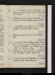July 15. Su.Deloraine, p. 102. Herodotus, c. 21. Call on Kenneysn: Gents at tea; adv. Josephs, Dr & T Uwins. 66 ½ / 71
16. M.Deloraine, p. 103/2, & 1/2 page. Herodotus, c. 24: Roscoe, p. 50. Meet Thelwal: dine at Gent’s. 66 ½ / 71
17. Tu. Herodotus, c. 27: Roscoe, p. 178. Sit to Joseph, 6; adv. M J & T Uwins: W dines. 69 / 77 ½
18. W.Deloraine, çala. Roscoe, p. 198. T Hulkes calls. 69 ½ / 70 ½
19. Th. Deloraine, 8 lines. Gilblas, & C Edw. Herodotus, c. 29: Roscoe, p. 228. Sit to Joseph, 7; adv. T Uwins & mrs Walsal: C G T: theatre, Court Jestor; adv. C M, junre: W sups. 66 ½ / 70 ½
20. F. Deloraine, p. 105/2. Herodotus, c. 31: Roscoe, p. 289. Seek Lane: W sups: N G at tea65 / 67 ½
21. Sa. Deloraine, p. 106. Herodotus, c. 32: Heidenmauer, p. 174. Meet C Bryant. 64 ½ / 67 ½
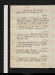July 22. Su. Deloraine, p. 108/2. Herodotus, c. 35: Heidenmauer, p. 314: Roscoe, p. 323. 65 / 67
23. M.Herodotus, c. 37: Roscoe, p. 399: Heidenmauer, Vol. II, p. 192. Martin’s, w. mes Roberts, Strickland & Osborne, Alcock, Caunter m, Thomas, Wheatsen, 2 Landseers, McAllm. 64 / 68
24. Tu. Deloraine, p. 110/2. Herodotus, c. 41: Heidenmauer, p. 235. W dines: 4 Hudsons sup. 65 ½ / 68 ½
25. W. Deloraine, p. 112. Write to W, on Bust. Herodotus, c. 44: Heidenmauer, p. 312; Vol. III, p. 170. Trelawney sups. 67 / 69 ½
26. Th.Deloraine, çala. Herodotus, c. 48: Roscoe, p. 480: Heidenmauer, p. 293, fin. Theatre, Duel, temp. Richelieue. 66 / 69 ½
27. F.Deloraine, 11 lines. Herodotus, c. 51: Roscoe, p. 585: Bold Stroke. Call on Gent. 64 / 68 ½
28. Sa.Deloraine, p. 115/2. Herodotus, c. 58: 1/2 Way to Keep Him. Call on Joseph & Westall: W at tea. 65 / 70
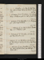July 29. Su.Herodotus, c. 63: Way to Keep Him, fin: All in Wrong. Call on mrs Woodn. Byron, çala. 66 / 69
30. M.Deloraine, p. 115. Herodotus, c. 66: Woman’s Prize: Stratagem, acts 1 & 2. Call on Josephn, w. M J. 66 ½ / 70 ½
31. Tu. Deloraine, p. 119/2. Herodotus, c. 70: Stratagem, fin. Call on miss Northcote. 64 ½ / 68
Aug. 1. W.Deloraine, p. 119. Write to M W S. Herodotus, c. 75: Farquhar, çala. 65 / 69
2. Th.Deloraine, p. 120/2. Herodotus, c. 81: Elyot, p. 47: New Inn, acts 1, 2, 3, 466 / 73
3. F. Deloraine, p. 122. Herodotus, c. 87: Elyot, p. 64: New Inn, fin: Taming the Shrew. Sup at Reynolds’s. 69 ½ / 71
4. Sa. Deloraine, p. 125. Herodotus, c. 92. Theatre, Henri III (Mlle Mars); adv. Stanhopee. H Holm callsn. 67 ½ / 70
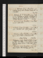Aug. 5. Su.Deloraine, p. 127. Herodotus, c. 95: Scott, Dryden, p. 104: Maiden Queen, acts 1, 2, 3.W dines. 67 ½ / 69
6. M. Deloraine, p. 130/2. Herodotus, c. 99: Scott, p. 220. Martin’s, w. Crumpes, A Strickland, H Caunter, Brockedon, Wheatsen, mlle Osborne, Emiliani, Regondi, Brookes. 65 ½ / 70
7. Tu.Deloraine, p. 132/2. Herodotus, c. 103: Scott, p. 320. Call on Ollier. 67 / 70
8. W. Deloraine, p. 133/2. Herodotus, c. 108: Scott, p. 420: C Blount, çala. Call on Joseph, w. W. 66 / 72 ½
9. Th. Deloraine, 9 lines. Herodotus, c. 112: Scott, p. 494. Call on H Holm: A Strickland calls. End of Vol. III. 64 ½ / 74 ½
10. F. Deloraine, revise. Write to M W S, & Kean on Holm. Herodotus, c. 116: Scott, p. 534, fin: Maiden Queen, acts 4, 5. Holm calls: call on Ollier n. 71 / 77 ½
11. Sa.Deloraine, revise. Herodotus, c. 120: Constant Couple: Don Sebastian, acts 1 & 2. 72 ½ / 75 ½
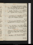Aug. 12. Su.Pol. Justice, Prospectus, p. 1. Herodotus, c. 122: D Sebastian, acts 3, 4: N Forster, p. 155. M calls: call on Ollier & Booth. 70 / 73 ½
13. M.Weather. Herodotus, c. 124: Sebastian, act 5: Rasselas, çala: N Forster, p. 270. 70 / 72
14. Tu.Pol. Justice, p. 4. Herodotus, c. 130: Coleridge, çala. Museum; T Burnete. 69 / 71 ½
15. W.Deloraine, revise. Herodotus, c. 134: Susp. Husband, acts 1 & 2. Museum; T Burnete. 69 / 71
16. Th.Fevere. Herodotus, c. 137: Susp. Husband, fin: Drummer, acts 1, 2. F R calls; Park Square: W at tea (read P J ). ] Prorogatione. 68 ½ / 73
17. F.Deloraine, 1/2 page; revise. Herodotus, c. 141: Drummer, fin. Call on Ollier:Percy sleeps, 2 nights. 67 / 72
18. Sa.Herodotus, c. 145: Provoked Husband. 67 ½ / 70
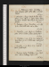Aug. 19. Su. Deloraine, revise. Herodotus, c. 148. E Prentis calls: call on Ollier. Conscious Lovers. 68 / 69 ½
20. M.Deloraine, 2 pages. Write to Ollier. Herodotus, c. 153: C W, p. 32. Call on Holmn. W dines: N G at tea: theatre, Hunchback; adv. Jerdan & Jerrolde. 66 ½ / 71
21. Tu.Deloraine, 1 page. Herodotus, c. 157: C W, p. 82. S Bannister calls: call on Ollier. 68 ½ / 70
22. W.Herodotus, c. 161: C W, p. 161: Scriblerus, çala. Call on Colburn, Golden Square, & N Sn. 67 / 69 ½
23. Th.Herodotus, c. 169: C W , p. 231. Call on Colburn, twice, G S, &c n: H Holm calls n: call on Gent n: W dines. 67 / 69 ½
24. F.Herodotus, c. 173: C W, p. 274. Seek Colburn: Joseph sups. 65 ½ / 70
25. Sa.Deloraine, revise. Herodotus, c. 179: C W, p. 322. Call on Scadding, Reform Act. 66 / 67 ½
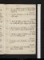Aug. 26. Su. Deloraine, revise. Write to Colburn. Herodotus, c. 182; Lib. III, c. 2.Call on Booth. C W, p. 362. 64 ½ / 67
27. M.Winter. Herodotus, c. 6: C W, p. 452, fin. Holm sups. 62 ½ / 65 ½
28. Tu. Write to Colburn & Ollier. Herodotus, c. 12: L Aikin, Eliz, p. 80: Surrey, çala. W dines. 64 / 67 ½
29. W. Deloraine, revise. Herodotus, c. 15: L Aikin, p. 144. Colburn & Grayson calls: Josephs sup. 61 ½ / 65½
30. Th. Deloraine, revise. Pol. Justice, çala. Herodotus, c. 20: L Aikin, p. 278. 63 / 66 ½
31. F.Deloraine, revise. Herodotus, c. 24: L Aikin, p. 320. 62 ½ / 68
Sep. 1. Sa.Deloraine, revise. Herodotus, c. 29: L Aikin, p. 412. W dines. 65 / 69
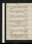Sep. 2. Su. Deloraine, 1 page; revise . Herodotus, c. 35: L Aikin, p. 488; Vol. II, p. 46. Call on Picken. 64 / 67
3. M.Deloraine, revise. Herodotus, c. 39: L Aikin, p. 150. Call at Gent’s & Martin’s. 63 ½ / 68 ½
4. Th.Deloraine, revise. Herodotus, c. 44: L. Aikin, p. 244. Seek Ollier: L Badams calls. 64 / 67 ½
5. W.Herodotus, c. 49: L Aikin, p. 324. Call on Colburnn, N B S (adv. Ollier), & miss Northcote. Numbness, right fingerse. Deorsume. 64 / 68 ½
6. Th.Herodotus, c. 53: L Aikin, p. 371. York Road, w. M J; adv. Uwins, Browne & Russell, twice. 64 / 67
7. F.Herodotus, c. 57: L Aikin, p. 415. York Road, M J; adv. Uwins, Brown & Russell: Joseph calls n. 64 / 66
8. Sa.Write to M W S, & mrs Wright, Dover. York Road; Blanchard calls. L Aikin, p. 469. W dies, 1/2 after five, A M. 64 / 67 ½
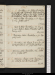Sep. 9. Su.Herodotus, c. 61: L Aikin, p. 506, fin. M & Josephsn call. Mourners; Blanchard, Jerrold, Chatfield, Latham (M, Keeley, Ogden, Elton, Buckstone, Burton)e. Call on Ollier. 63 ½ / 66
10. M.Write to M W S. Herodotus, c. 65: Nugæ, p. 114. Joseph calls na. 65 / 66 ½
11. Tu.Write to White. Herodotus, c. 71: Nugæ, p. 144. Wallace, Uwins & Prenticen call: Trelawney sups. 63 ½ / 66 ½
12. W.Deloraine, revise. Herodotus, c. 75: Nugæ, p. 268. 62 / 65 ½
13. Th.Herodotus, c. 80: Nugæ, p. 397, fin: Cobbet, Reformation, p. 48. Joseph calls n, & Uwins. 63 / 65 ½
14. F.Deloraine, revise. Herodotus, c. 84: Cobbet, p. 132. Josephs call na. 62 ½ / 67 ½
15. Sa. Deloraine, 2 pages; revise . Herodotus, c. 90: Cobbet, p. 200. Ste Prentis calls na. 63 / 68
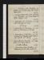Sep. 16. Su.Pol. Justice, çala. Herodotus, c. 100: Cobbet, p. 224. M calls: call on Ollier & Josephn: Hudsons dine. 62 / 65 ½
17. M.Protestant Reformation, Plan. Pol. Justice, 1 page. Herodotus, c. 106: Life of Coligni. T Ht, Picken & Wallacena call. 63 ½ / 67 ½
18. Tu.Reformation, p. 2/2. Herodotus, c. 110. Call on R Tn; adv. Gyde: R T at tea. Go to press. 64 / 66 ½
19. W.Reformation, p. 4/2. Herodotus, c. 116: Companions of Columbus, p. 96. T Ht sups. 60 ½ / 67
20. Th.Reformation, p. 6/2. Herodotus, c. 119: Companions, p. 172. Martins jrs call na: call on Joseph: N G at tea: L K do: M calls. 59 / 65 ½
21. F.Reformation, p. 7/2. Herodotus, c. 125: Transfusion, p. 85. Call on Hudson. Sir Walter Scott dies . 61 / 67
22. Sa.Reformation, p. 8, fin. Herodotus, c. 130: Transfusion, p. 236. Arthur Smith calls. 64 ½ / 67 ½
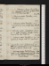Sep. 23. Su.Deloraine, 2 pages. Herodotus, c. 135: Transfusion, Vol. II, p. 28. Dine at Hudson’s, w. M J: Blanchard calls n. 62 ½ / 68 ½
24. M.Deloraine, revise. Herodotus, c. 138: Transfusion, p. 95. 63 / 71
25. Tu.Deloraine, revise. Herodotus, c. 144: Transfusion, p. 146. Josephs sup. A Smith calls. 65 / 72
26. W.Deloraine, revise. Transfusion, Vol. III, p. 76. Call on Meadows: M calls: M W S & Percy at tea; adv. Trelawney. 66 ½ / 72 ½
27. Th.Deloraine, revise. Herodotus, c. 150: Transfusion, p. 202, fin. Seek T Ht: A Smith sups. 65 ½ / 72
28. F.Herodotus, c. 155: Companions, p. 225. M JM W S calls (read Reformation); meet F & E Reynolds: theatre, 3/10 Pizarroe: Meadows calls. 66 / 70 ½
29. Sa.Deloraine, revise. Write to Kenney. Herodotus, c. 160: Companions, p. 337, fin: Sarrans, p. 100. Call on Kenney; adv. Badams. Finish Revisal. 66 / 70 ½
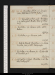Sep. 30. Su.Herodotus, Lib. IV, c. 6: Sarrans, çala. M W S dines (read Pol. Justice). 68 / 69 ½
Oct. 1. M.Thoughts on Parr, çala: Herodotus, c. 10. Call on Gent: theatre, House of Colberg; & C Ge. 66 ½ / 69 ½
2. Tu.Herodotus, c. 14: Sarrans, çala. Call on Wallace. 66 / 67 ½
3. W.Herodotus, c. 19: Sarrans, çala. 63 ½ / 68
4. Th.Write to Hodgets. Herodotus, c. 23: Sarrans, çala. John G calls: Hudson sups. 65 / 67
5. F.Herodotus, c. 30: Sarrans, fin: W, Tales. Sup at Reynolds’s, w. F. 64 ½ / 65 ½
6. Sa.Pol. Justice, 2 pages. Herodotus, c. 36. Theatre, Factory Girle. 60 ½ / 64 ½
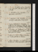Oct. 7. M. Su.Pol. Justice, 1 page. Herodotus, c. 42. T Ht calls n: seek Ollier & M W S: call on Booth. 59 / 66
8. Tu. M.Pol. Justice, 1/2 page. Herodotus, c. 45. M W S dines: call on Ollier. n61 / 62 ½
9. W Tu.Pol. Justice, çala. Herodotus, c. 49: Fleetwood, p. 96. Call on Ollier (Prospectuses). 57 / 63
10. W.Preface, Fleetwood, p. 3. Herodotus, c. 53: Fleetwood, p. 209. Pickering, Artist, calls: call on Joseph & Uwins, w. M J & M W S; adv. Dr Quin: M W S dines. 60 ½ / 66
11. Th.Herodotus, c. 61: Fleetwood, p. 300; Vol. II, p. 204. M Walker calls, & mrs Winter, fr. H Payne: call on Gent; adv. Formans. 64 ½ / 68
12. F.Preface, p. 6. Write to H Payne. Herodotus, c. 65. Theatre, All’s Well; adv. Stanhopee. 64 ½ / 66
19. Sa.Obfusc e. Herodotus, c. 70: Fleetwood, p. 295; Vol. III, p. 95. Call on mrs Wintern: M W S at tea. 62 / 66 ½
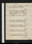Oct. 14. Su.Preface, p. 9. Herodotus, c. 72: Fleetwood, p. 342, fin. Call on Ollier, neg. 59 / 64
15. M.Revise. Herodotus, c. 76: Bussy d’Ambois, acts 1, 2. Caunter calls: Martin’s, w. C Landseer, Hanton, &Brooke & Macfarlane; adv. Caunter & femme. 59 ½ / 66
16. Tu.Herodotus, c. 78: All Fools, acts 1 & 2. 61 ½ / 65
17. W.Herodotus, c. 85: Highland Smugglers, p. 100. Call on Ollier: Blanchards sup. 59 / 63
18. Th.Necromancers, p. 1. Herodotus, c. 87: Highland Smugglers, p. 226. Ritchie calls. 59 ½ / 64
19. F.Constipe. Necromancers, 1 page. Herodotus, c. 93: Smugglers, p. 358. Kennies expected. 61 / 63 ½
20. Sa.Necromancers, p. 2. Herodotus, c. 98. Call on Gent: theatre, 1/2 Rob Roy, & Pageant, Sir W Ste. 57 ½ / 63
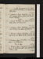Oct. 21. Su.Constipe. Necromancers, p. 3/2. Deloraine, invent. Herodotus, c. 103. Meet Picken: M W S dines. 57 ½ / 61
22. M.Deloraine, 2 pages. Herodotus, c. 109. Theatre, Waverley, & Vision of Bard; adv. Hazlit, Bacon & Stanhopee. M dies . 56 ½ / 61 ½
23. Tu.Flaccide. Herodotus, c. 117. Call on Kenneyna: M W S at tea; adv. Meadoweses. 56 ½ / 60 ½
24. W.Deloraine, 10 lines. Herodotus, c. 121: Smugglers, Vol. II, p. 154. Call on miss Northcote. 57 / 59
25. Th.Deloraine, 3 pages. Herodotus, c. 124: Smugglers, p. 206. Call on Caunter: Pickering calls. 56 / 61
26. F.Deloraine, 1/2 page. Herodotus, c. 127: Smugglers, p. 266. M W S dines. Fog, 4 days. 56 / 59
27. Sa.Deloraine, 1/2 page. Smugglers, p. 347: Arlington, p. 68. Ste. Prentis calls: call on Geo. Whiten: Trelawny sups. 55 / 60 ½
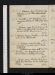Oct. 28. Su.Deloraine, 1/4 page. Herodotus, c. 133: Arlington, p. 244. Call on Ollier & Booth (Valpy). 56 / 61
29. M.Herodotus, c. 138: Arlington, p. 326: Smugglers, Vol. III, p. 58. M W S at tea: White calls. 58 / 63 ½
30. Tu.Deloraine, 1/2 page. Necromancers, p. 1. Herodotus, c. 144. Call on Josephn & mrs Winter: soir, Guiccioli’s, w. M W S. Smugglers, p. 112. 57 / 60 ½
31. W.Deloraine, Preface. Herodotus, c. 148: Smugglers, p. 219. Caunter calls. 56 ½ / 61 ½
Nov. 1. Th.Deloraine, revise. Herodotus, c. 151: Smugglers, p. 330. Call on Gentna: theatre, Clutterbuckse. Fleetwood, in one volume, publd.59 ½ / 63 ½
2. F.Herodotus, c. 155: Smugglers, p. 419, fin. Dine at M W S’s, w. Trelawny & mrs Hogg. 59 / 63
3. Sa.Deloraine, revise. Arlington, Vol. II, p. 120. Suffolk Street Exhibition; adv. E Ps, Hill, &Foggo. & Careye. Leslie dies. 60 / 63
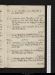Nov. 4. Su.Herodotus, c. 159: Arlington, p. 258. M W S dines. 58 ½ / 63
5. M.Deloraine, revise. Herodotus, c. 162: Arlington, p. 349. Call on Miss Winter: theatre, Dark Diamond; adv. Skeffington & Stanhopee. N G at tea. 54 / 57 ½
6. Tu.Herodotus, c. 166: Arlington, Vol. III, p. 169. Write to M A Davies. 52 / 58
7. W.Write to Denman. Proofs. AArlington, p. 215: Hardy, Memoir, p. 78. Call on M A Davies: Medicinee. Gent dies.53 / 57 ½
8. Th.Herodotus, c. 171: Arlington, p. 323, fin: Hardy, p. 127, fin: Mutiny of Bounty, p. 102. Uwins sups. 52 / 55 ½
9. F.Deloraine, revise. Mutiny, p. 170. H Marshal calls: M W S dines; adv. Trelawny. 50 ½ / 52 ½
10. Sa.Deloraine, revise. Herodotus, c. 175: Mutiny, p. 320. Theatre, Every Man in his Humoure. 50 ½ / 55 ½
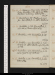Nov. 11. Su.Deloraine, 1 page; revise . Write to H Payne. Herodotus, c. 180. Call on mrs Wintern, M A Daviesn & L Kenney: M W S at tea. 53 ½ / 58
12. M.Herodotus, c. 181: Mutiny, p. 356, fin: Kuzzilbash, p. 112. Call on M A Davies. 54 / 58
13. Tu.Herodotus, c. 184: Kuzzilbash, p. 188. Call on T Uwins: M W S at tea. 52 ½ / 53
14. W.Herodotus, c. 187: Kuzzilbash, p. 318. 53 / 59 ½
15. Th.Herodotus, c. 192: Kuzzilbash, p. 348; Vol. II, p. 101. Call on Caunter: sup at Reynlds’s, w. F & R. 56 ½ / 60 ½
16. F.Herodotus, c. 197: Demonology, p. 64. Call on S Gent & miss Northcote. 55 ½ / 60
17. Sa.Herodotus, c. 200: Kuzzilbash, p. 168. M W S at tea. 54 ½ / 58
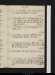Nov. 18. Su.Herodotus, c. 205: Demonology, p. 201. Call on mrs Wood; adv. C Jones. 53 / 54
19. M.Herodotus, Lib. V, c. 8: Demonology, p. 274. Kempson calls: sup at Martin’s, w. Alcock, Wheatsen, &C Landseer & Herring; adv. Foggo & Caunter. 52 ½ / 55
20. Tu.Herodotus, c. 14: Demonology, p. 343. White calls. 54 / 60
21. W.Herodotus, c. 18: Kuzzilbash, p. 196. Thrupp calls: theatre, 1/2 Revengee. 55 / 59
22. Th.Necromancers, 2/3 page. Herodotus, c. 23: Kuzzilbash, p. 282: M W S at tea: call on Martin: R T & S Reeve call n. 54 ½ / 58
23. F.Herodotus, c. 28: Kuzzilbash, p. 359. 53 ½ / 57 ½
24. Sa.Herodotus, c. 31: Kuzzilbash, Vol. III, p. 52. Call on Wallacen: Geo. Whites, Joseph & T Uwins call n: theatre, St Patrick’s Eve; adv. Skeffingtone. 56 ½ / 61
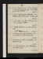Nov. 25. Su.Necromancers, 10 lines. Herodotus, c. 35: Demonology, p. 402, fin: Kuzzilbash, p. 118. Call on Picken. 58 / 61½
26. M.Necromancers, çala. Herodotus, c. 40. Wallace calls: M W S at tea: Trelawny sups. 56 ½ / 60 ½
27. Tu.Herodotus, c. 43: Kuzzilbash, p. 245. Call on Josephna & T Uwins. 54 / 58
28. W.Constipe. Herodotus, c. 49: Kuzzilbash, p. 286. Eight Three days’ sun. 53 ½ / 57
29. Th.Necromancers, çala. Herodotus, c. 55: Kuzzilbash, p. 332, fin. M W S at tea. 54 / 56 ½
30. F.Necromancers, 14 lines. Herodotus, c. 65. Meadowses sup. 51 / 56
Dec. 1. Sa. Necromancers, çala. Herodotus, c. 66.M W S at tea. 56 / 62
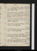Dec. 2. Su.Necromancers, 1 page. Herodotus, c. 71: Love’s Labour Lost, acts 1, 2, 3. Call on Colburnn: Colburn calls. 59 ½ / 62
3. M.Necromancers, çala. Herodotus, c. 75: Love’s Labour, act 4: Loves of Angels, p. 30: Miserrimus, p. 70. Theatre, William Tell; adv. Morris & Dr Uwinse. Parliament dissolvede.55 ½ / 58 ½
4. Tu.Necromancers, p. 1. Herodotus, c. 81: Loves of Angels, p. 59, fin: Miserrimus, p. 115, fin. Call on Wallacen: Thrupp sups. 54 / 58
5. W. Necromancers, p. 2/2. Herodotus, c. 86: Buccaneer, p. 169.N G at tea. 53 ½ / 55
6. Th. Herodotus, p. 89: Buccaneer, p. 343; Vol. II, p. 116. Call on Geo. White n. 53 / 56
7. F.Morning of Promisee. Herodotus, c. 91: Buccaneers, p. 266. Smith (Gower Street) sups. Peter Keir dies.52 ½ / 53
8. Sa.Herodotus, c. 93: Buccaneers, p. 306; Vol. III, p. 147. See S Gent: Kenney sups. 50 ½ / 54
Life of Cromwell, by Dr. M. Russell 2 Vols(Constable's Miscellany)
XXXI
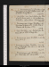Dec. 9. Su.Necromancers, p. 3/2. Herodotus, c. 98: Buccaneer, p. 315, fin. Colburn calls n: call on H Holm & miss Winter. 53 ½ / 58 ½
10. M. Herodotus, c. 101: Love’s Labour, fin: Merchant of Venice, acts 1, 2. Vote for Portman & Wharleye. Call on Colburn: Trelawney sups. 55 ½ / 58 ½
11. Tu. Necromancers, 3 pages. Herodotus, c. 107: Merchant of Venice, act 3. Theatre, Men of Pleasure; adv. Barham & Poolee. 53 / 58
12. W. Fevere. Herodotus, c. 115: Shylock, fin: Romeo, acts 1, 2. M W S & Percy dine. 53 ½ / 55
13. Th.Necromancers, revise. Herodotus, c. 123: Romeo, acts 3, 4. 53 / 54
14. F.Necromancers, revise. Herodotus, c. 126; Lib. VI, c. 6: Romeo, fin: Lear, acts 1, 2, 3. Call on Ollier (Prospectus). 52 ½ / 54
15. Sa.Necromancers, çala. Herodotus, c. 9: Lear, fin: Much Ado, act 1. Call on M W S. 53 / 56 ½
Dec. 16. Su.Necromancers, çala. Herodotus, c. 13: Much Ado, acts 2, 3. Call on Ollier & Bth. 50 / 52
17. M.Indisposede. Herodotus, c. 16: Much Ado, act 4. M W S & Percy dine; adv. Booth, Joseph & Trelawny. 53 / 58
18. Tu.Necromancers, 1/2 page. Herodotus, c. 21: Much Ado, act 5: Measure for M, acts 1, 2. F R calls: sup at Reynolds’s; w. F, Macready, & Wynns. 53 / 57
19. W. Calculations. Herodotus, c. 25: Measure for M, acts 3, 4. Call on Booth & mrs Wood. 50 ½ / 51
20. Th.Herodotus, c. 33: Measure for M, fin. Call on Caunter: theatre, Othello, acts 1, 2, 3e: C G, Skeffington: Hudson sups. 47 ½ / 49 ½
21. F.Herodotus, c. 41: C of Errors, acts 1, 2. Meet Wallace: call on Trelawny: M W S at tea. 48 / 54 ½
22. Sa. Necromancers, 5 lines. Letter to Broughm. Herodotus, c. 45: C. of Errors, fin: Twelfth Night, acts 1, 2. Call on miss Northcote. 52 / 57
Dec. 23. Su. Necromancers, p. 2/2. Herodotus, c. 51: Twelfth Night, acts 3, 4. Call on Ollier& Booth: Bulwer’s, w. H B, Austins & Mills. 55 / 60
24. M. Herodotus, c. 55: Twelfth Night, fin: Winter’s Tale, acts 1 to 4. Daniel & S Gent call n. 55 ½ / 57
25. Tu. Rain. Herodotus, c. 60: Winter’s Tale, act 5: Pericles, acts 1, 2. Booth calls: Percy dines. 56 ½ / 59
26. W. Necromancers, p. 3. Herodotus, c. 64: Pericles, fin.F R calls. Write to H Payne. 52 ½ / 56 ½
27. Th.Herodotus, c. 68: Dale Owen. Call on Mason, at Booth’s (Contract): M W S at tea. Necromancers, Contract. 51 ½ / 52 ½
28. F.Necromancers, p. 4. Herodotus, c. 73: Aug. Newton. Dine at Geo. White’s, w. Anthony & Jas Whites & femmes, & 2. Alexander. 48 / 50
29. Sa. Rain. Herodotus, c. 76: All’s Well: Verona, acts 1, 2.49 / 52
Dec. 30. Su. Necromancers, çala. Herodotus, c. 82: Verona, fin: As you Like it. 49 / 51
31. M. Necromancers, 8 lines. Herodotus, c. 85: Timon. Call on Orme (Longman’s). Snow.48 / 50 ½
Contact --  -- Cookies/Privacy
-- Cookies/Privacy